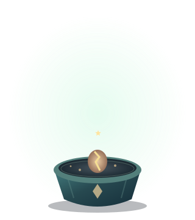

GROWTH育成
しずく
0
- 毎秒
- 0.5
- 全体倍率
- ×1.00
- 星
- 0
成長の進み
しずくを集める
STAGE 1 / 5

星を収穫できます
種
TOOLS設備
HARVEST星の収穫
しずく・設備・累積はリセットされ、星と実績は残ります。
STARSPROUT GARDEN
夜の温室で、星の植物をそだてる放置ゲーム。しずくを集めて、星の花をゆっくり咲かせましょう。
STAGE 1 / 5

星を収穫できます
種
しずく・設備・累積はリセットされ、星と実績は残ります。
しずくを集めて設備を育て、星の花を咲かせよう。収穫した星は次の庭を永く照らします。
植物の揺れ、光の粒、発光の明滅を止めます。端末の「視差効果を減らす」設定にも従います。
保存
自動保存が有効です。
データの初期化
星・実績を含むすべての進み具合を消して、最初からやり直します。